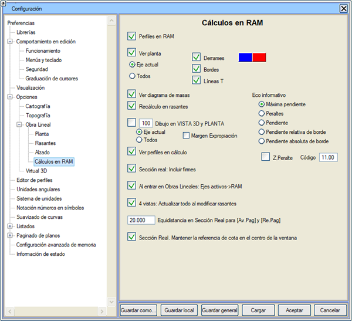

| |
|
BELLEKTE (RAM) HESAPLAMALAR
|
Yapılandırma > Tercihler > Güzergah Projesi > Bellekte (RAM) Hesaplamalar açılır menüsünden erişilebilen, RAM'deki hesaplamalara ilişkin yapılandırma menüsü:  Şev Etekleri. Planda çizilen yarma ve dolgu şev eteklerinin rengi ve kütleler diyagramı için değerlerin gösterildiği pencerenin rengi yapılandırılabilir.  Güzergah Projelerine girerken: Aktif eksenler -> RAM. Güzergah Projeleri modülüne girildiğinde, aktif eksenlerin ve birleşim geometrilerinin ISPOLn.per dosyaları belleğe yüklenir. Bu özellik, Enkesitler RAM'de seçeneği devre dışı bırakılarak genel olarak da kapatılabilir. Güzergah Projelerine girerken: Aktif eksenler -> RAM. Güzergah Projeleri modülüne girildiğinde, aktif eksenlerin ve birleşim geometrilerinin ISPOLn.per dosyaları belleğe yüklenir. Bu özellik, Enkesitler RAM'de seçeneği devre dışı bırakılarak genel olarak da kapatılabilir. Bunları manuel olarak yüklemek için, DÜŞEY GÜZERGAH > ARAÇLAR > Aktif eksenler -> RAM menüsünden erişilebilir. VISTA3D ve PLAN'da Çizim: mevcut ekseni veya tüm eksenleri bir sönümleme yüzdesiyle plan ve 3B görünüm üzerinde göstermeyi sağlar. Kamulaştırma Sınırı: VISTA 3D ve PLAN'da Çizim seçeneğinin etkinleştirilmesi koşuluyla, 3B görünüm ve plan çiziminde kamulaştırma sınırının görüntülenmesini etkinleştirmek mümkündür. Anlık Enkesit'te [İleri Sar] ve [Geri Sar] için Adım Aralığı: [İleri Sar] ve [Geri Sar] tuşlarına basıldığında Anlık Enkesit'teki enkesit atlama aralığını tanımlar. Anlık Enkesit. Pencere merkezindeki kot referansını koru. Bu seçenek etkinleştirildiğinde ve bilgi izleyici veya [Geri Sar][İleri Sar] tuşlarıyla eksen boyunca hareket edildiğinde, sabit referans olarak kod 1'in kotu yerine, pencerenin merkezinin düşeyinde bulunan noktadaki kırmızı kot yüzeyinin (67), platform yüzeyinin (68) veya arazi yüzeyinin (104 veya 66) kotu kullanılır. Anlık Enkesit penceresinde yatay bir kaydırma yapıldığında, enkesit, pencere merkezindeki referans yüzeyin eğimine göre yukarı veya aşağı hareket edebilir. Bilgi Paneli: Bilgi Paneli'nde şu değişkenlerden birini gösterir: Maksimum Eğim, Deverler, Eğim, Kenar Göreli Eğimi veya Kenar Mutlak Eğimi. Ayrıca, [] Z.Dever kutucuğu etkinleştirilirse, Düşey Güzergah ve Kırmızı Kot Bilgi Paneli'ne, bir kod için ve eksenin her iki tarafında enine eğim ve kot bilgisi eklenir. |